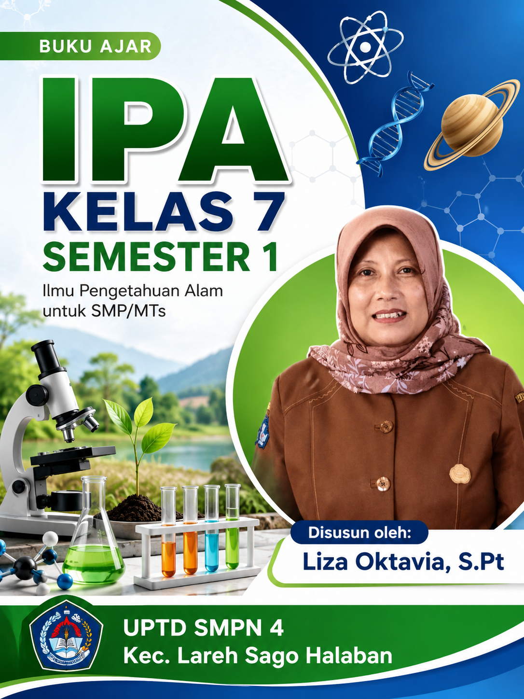

Buku Ajar IPA Berbasis Kurikulum Merdeka untuk Peserta Didik Kelas VII SMP
📘 Edisi 2026Buku ajar IPA yang disusun khusus untuk mendukung pembelajaran Kurikulum Merdeka

Buku Ilmu Pengetahuan Alam Kelas 7 Kurikulum Merdeka Semester 1 ini disusun sebagai bahan ajar utama bagi peserta didik kelas VII SMP/MTs. Buku ini mengacu pada Capaian Pembelajaran (CP) Kurikulum Merdeka yang menekankan pada pemahaman konsep sains, keterampilan proses ilmiah, dan penerapan dalam kehidupan sehari-hari.
Materi disajikan secara sistematis dengan bahasa yang mudah dipahami, dilengkapi ilustrasi, aktivitas praktikum sederhana, latihan soal, serta asesmen formatif dan sumatif untuk mengukur ketercapaian kompetensi peserta didik.
Materi IPA lengkap sesuai CP Kurikulum Merdeka Semester 1
Aktivitas dan percobaan sederhana yang aplikatif
Contoh penerapan IPA dalam kehidupan sehari-hari
Asesmen tengah dan akhir semester terstruktur
Buku ini disusun secara sistematis dengan pembagian:
Klik pada setiap bab untuk membuka materi lengkap (file .html terpisah). Semua bab akan terbuka di tab baru.
Pengantar IPA, objek kajian, dan langkah-langkah metode ilmiah
Wujud zat, sifat fisika dan kimia, serta perubahan materi
Mengenal gejala alam, pengukuran, dan fenomena di sekitar kita
Review dan evaluasi materi Bab 1 – 3
Struktur sel, organel, serta perbedaan sel tumbuhan dan hewan
Interaksi makhluk hidup dengan lingkungan dan keseimbangan ekosistem
Aplikasi konsep zat, campuran, dan pemisahannya dalam kehidupan sehari-hari
Review komprehensif seluruh materi Semester 1
Mengenal lebih dekat sosok di balik buku ini
Untuk informasi lebih lanjut tentang buku ini, silakan hubungi: